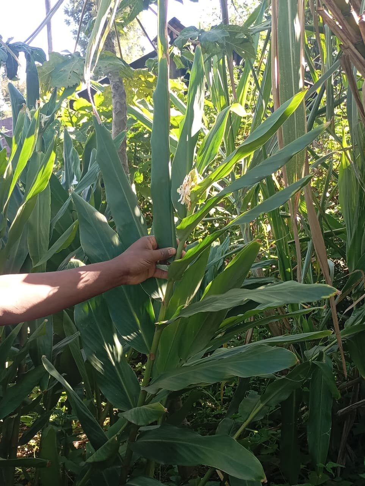
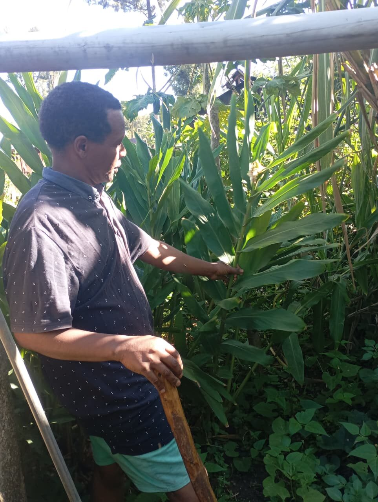
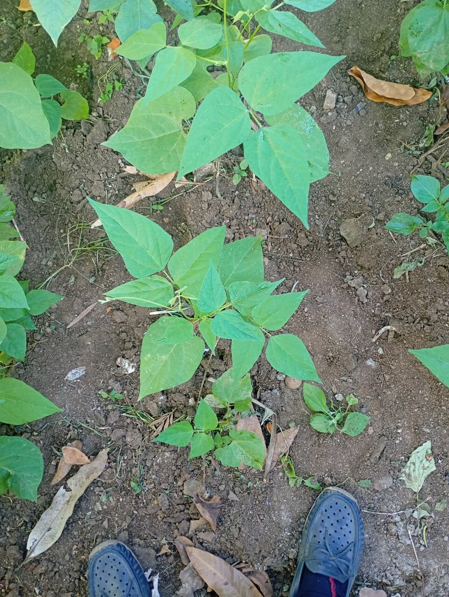

What John Maina's Three Crops Have in Common: No One Told Him What They're Worth
John Maina grows maize, ginger and banana on the same plot in Subukia. Three different crops, three different harvest calendars — and the same problem waiting at the end of each one: not knowing what the market would actually pay.
 Photo / Field Documentation — George Ngugi. John Maina, farmer, Subukia.
Photo / Field Documentation — George Ngugi. John Maina, farmer, Subukia.John Maina's plot doesn't grow one thing. Between the maize stalks, a banana tree carries a full, heavy bunch, and off to one side, half-hidden under broad cane-like leaves, his ginger is coming along under its own timeline entirely. Walking it with him means walking through three different crops, three different rhythms, and — as it turned out — one shared problem.
The maize was the easiest to talk about first: familiar, widely grown, its calendar well understood by most farmers in the area. The banana, heavy on its stem, told its own story of patience — a crop that isn't planted and harvested in a season so much as tended for a much longer stretch. And the ginger, lower to the ground and easy to miss if you didn't know to look for it, was its own quieter case, grown alongside the rest without asking for much attention until it was time to dig it up.
 John, beneath his banana tree
John, beneath his banana tree
Ginger, growing low among the maize
John, checking the gingerWhat John raised, once we moved past the crops themselves, wasn't about growing at all. It was about what happens after: he described running into real errors at the market — mistakes that trace back to not having reliable, current information on what his produce was actually worth at the time he was selling it. Without that knowledge, a farmer is negotiating blind, taking whatever price is offered because there's no easy way to check it against anything else.
That is a different problem from the ones GreenTrack has mostly been built to solve so far. Tracking a crop from planting to harvest doesn't tell a farmer what a kilo of ginger is fetching this week, or whether a buyer's offer for his maize is fair. John's plot doesn't just grow three different crops — it exposes three different moments where the same gap shows up: a harvest ready to sell, and no dependable way to know its market value before agreeing to a price.
Growing three crops well doesn't protect a farmer at the market. Without current price information, every sale is still a guess.
It's a variation on something this same research trip kept surfacing in different forms: production and selling are not separate problems that can be solved independently. A farmer can do everything right in the field — rotate crops, tend a banana tree for years, time a ginger harvest carefully — and still lose out at the point of sale simply because he didn't know what he was owed. For a tool like GreenTrack, that reframes what "helping a farmer" has to include. Crop tracking answers what was grown. It doesn't yet answer what it's worth, right now, to someone ready to buy it.

Intercropped seedlings on the same plot, SubukiaI didn't come to John's plot looking for a pricing problem. I came to look at maize, and left thinking about ginger and bananas too, and about how little any of that growing knowledge protects a farmer once the crop is ready to sell. It's the same lesson in a new shape: the gap in GreenTrack isn't only in what happens on the plot. It's in what a farmer knows — or doesn't — the moment he steps off it.
- Market-price errors as a real, recurring cost to farmers — not a hypothetical one
- The need for current, dependable market-price information at the point of sale
- Confirmation that production and market access are linked problems, not separate ones
- A reminder that mixed-crop farms need this across every crop they grow, not just one